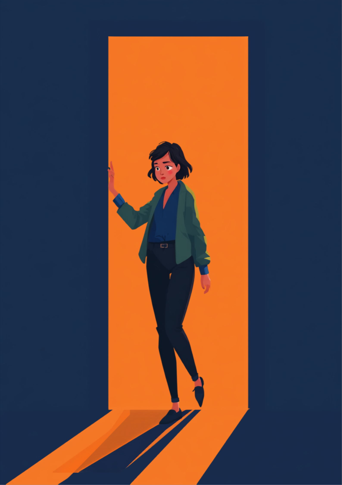

多発性硬化症は、神経の伝わり方が体温や疲労によって変わりやすく、同じ人でも「できる日」と「できない日」の差が大きく出ることがある病気です。それでも外見からは分かりづらいぶん、「さっきまで普通にしてたのに」「大げさなんじゃないか」と受け取られてしまう場面があるようです。この記事では、多発性硬化症のある方が職場で感じやすいすれ違いと、伝え方、使える制度を当事者の声をもとに整理しました（2026年8月時点の情報です）。
PR



冷房の効いた部屋から一歩出た瞬間、足元の感覚がふっと遠くなる
「さっきまで普通に歩けていたのに」気温で変わる症状の伝わりにくさ

多発性硬化症は、脳や脊髄などの中枢神経を包む組織に炎症が起きることで、しびれや脱力、視覚の異常などさまざまな症状が現れる病気です。症状の出方や強さには個人差があり、同じ人でも時期によって変化するとされています。まめざる
就労支援の現場で関わってきた中で、多発性硬化症のある方から聞くことが多いのが「暑いところから涼しいところ、涼しいところから暑いところに移動した直後がいちばんつらい」という話です。体温が上がると神経の信号が伝わりにくくなり、しびれや脱力が一時的に強く出ることがあり、これはウートフ徴候と呼ばれる現象だとされています。冷房の効いた会議室から真夏の屋外に出た瞬間に足がもつれてよろけてしまい、周りに驚かれた、という経験をした方もいます。
本人にとっては神経の仕組みによる一時的な反応でも、周囲からは「さっきまで普通に歩いていたのに、大げさなんじゃないか」「疲れているふりをしているのでは」と見えてしまうことがあるようです。見た目の変化が少なく、数分から数十分で元に戻ることも多いため、余計に説明しづらいという声も聞かれます。
!
多発性硬化症の症状の現れ方や、気温との関係の強さには個人差があります。この記事の内容がそのまま当てはまるとは限らないため、体調に不安がある場合は自己判断せず主治医に相談することをお勧めします。
「診断されたのは28歳のときで、最初は片方の足がしびれる程度でした。それが今は、夏の外回りのあとに事務所に戻ると、ろれつが回らなくなることがあって。最初の頃は疲れてるだけだと思ってたんですけど、3回目くらいで『あ、これはあの現象だ』って気づきました。上司に説明したとき、『暑いと誰でもだるくなるよ』って軽く流されて、正直言うとちょっとムッとしたんですけど、うまく言葉にできなくて黙ってしまいました。今は外回りのあとに15分だけ涼しい場所で座る時間をもらえるようになって、だいぶ楽になりました。」
30代・女性（多発性硬化症・営業職）
「僕の場合は視神経に炎症が出るタイプで、パソコンの画面がぼやけて二重に見える時期がありました。半年くらい薬でコントロールできてる期間が続いたと思ったら、急にまた視界がおかしくなって。正直、次いつ悪化するか分からない怖さがいちばんきついです。会社には『視覚に波がある病気です』とだけ伝えて、細かい病名までは言ってません。それで十分理解してもらえたので、無理に全部話す必要はないんだなと思いました。」
20代・男性（多発性硬化症・IT職）
「今日はできたのに、明日はできない」症状の波という仕組み
多発性硬化症の多くは、症状が強く出る「再発」と、落ち着いている「寛解」を繰り返す経過をたどるとされています。さらに寛解の時期であっても、気温や疲労、睡眠不足、ストレスなどをきっかけに、一時的に症状が強く出ることがあります。つまり「今日できたことが明日もできる」とは限らず、体調の波そのものが、この病気の特徴のひとつだと言えそうです。
i
ウートフ徴候による症状の悪化は、体温が下がれば元に戻ることが多いとされています。ただし再発による症状の悪化とは別のものとされているため、症状が長く続く場合や新しい症状が出た場合は、自己判断せず早めに主治医に相談することが勧められています。
このように波があること自体は、多発性硬化症という病気の性質であり、本人の頑張りや気の緩みとは関係がないとされています。「今日は調子が良さそうだったのに」と言われることがつらいという声も多く、日によって差があることを前もって伝えておくと、周囲の受け止め方が変わることもあるようです。
職場にどう伝える、気温と体調のつながりを説明する工夫
症状の仕組みをすべて説明しようとすると、かえって伝わりにくくなることがあります。業務に関わる具体的な場面だけに絞って伝える方法のほうが、双方にとって負担が少ないとされています。
具体的な場面に絞って伝えるという考え方
- 「暑い場所から涼しい場所、またはその逆に移動した直後は、少し足元がふらつくことがあります」
- 「そのときは数分〜数十分で落ち着くので、驚かせてしまったら申し訳ないですが心配しすぎなくて大丈夫です」
- 「体調に波がある病気なので、調子が良い日もあれば、そうでない日もあります」
- 「新しい症状が出たり、いつもと違う長さで続いたりしたときだけ声をかけてもらえると助かります」
相談の一コマ
相談者
この前、冷房の効いた会議室から廊下に出た瞬間に足がもつれて、壁に手をついちゃったんです。同僚がすごく心配してくれたんですけど、「大丈夫です」としか言えなくて、逆に変な空気になってしまいました。
まめざる
とっさのことだと、うまく説明できなくて当然だと思います。落ち着いたタイミングで「気温差で一時的に足元がふらつくことがある」とだけ伝えておくと、次に同じことが起きても周りが慌てずに済むかもしれません。
相談者
病名まで詳しく話す必要はあるんでしょうか。あまり大ごとにしたくない気持ちもあって。
まめざる
病名を伝えるかどうかは、あなたが決めていいことです。「気温差で症状が出やすい体質」というくらいの伝え方でも、業務上の配慮を相談するには十分な場合が多いですよ。
「大丈夫です」で終わらせてしまうと、次に同じ場面が起きたときも周りは戸惑ってしまいます。先に一言伝えておくことは、大ごとにすることではなく、お互いが安心して働くための準備だと思ってもらえたらうれしいです。まめざる
就職・転職の場面では、面接や入社後の早い段階で「気温差や疲労で症状が変わることがある」という点だけ伝えておくと、配置や業務内容の相談がしやすくなったという声もあります。すべてを一度に伝える必要はなく、関わりの深い人から少しずつ共有していく進め方でも十分だとされています。
使える制度と、一人で抱えないための相談先
身体障害者手帳という選択肢
多発性硬化症は、歩行や日常生活への影響の程度によっては、身体障害者手帳の対象となる場合があります。等級は症状の程度によって異なるため、詳しくは主治医や自治体の障害福祉窓口に確認するのが確実です（2026年8月時点の情報です）。手帳を取得すると、障害者雇用枠での就職や、企業側の合理的配慮を前提にした働き方を選びやすくなる場合があります。
障害年金と指定難病の医療費助成
多発性硬化症は国の指定難病のひとつであり、要件を満たせば医療費助成の対象となる場合があります。また症状の程度によっては障害年金の対象となるケースもあるとされていますが、認定基準は身体障害者手帳とは別に定められています（2026年8月時点の情報です）。具体的な要件や金額は個別の状況によって異なるため、年金事務所や社会保険労務士への相談をお勧めします。
相談できる窓口
- 主治医・神経内科（症状の記録や、働き方についての意見書の相談）
- 職場に選任されている産業医（50人以上の事業場に選任義務あり）
- 自治体の障害福祉窓口、難病相談支援センター
- 就労移行支援事業所（体調管理を含めた就労準備や職場との調整）
多発性硬化症の症状の現れ方や、気温との関係の強さ、必要な配慮の内容には個人差があります。この記事の内容がそのまま当てはまるとは限らないため、実際の判断は主治医・支援者・自治体の窓口とよく相談しながら進めることをお勧めします（2026年8月時点の情報です）。
症状に波があることは、頑張りが足りないからではありません。「今日はできたのに」と比べられてつらくなる前に、波があること自体を先に共有しておくことは、決して大げさなことではありません。
よくある質問
Q. 多発性硬化症でも正社員として働けますか？
多発性硬化症のある方の多くが、通院や体調管理をしながら正社員として働き続けているとされています。ただし症状の現れ方や再発の頻度には個人差が大きいため、勤務時間の調整や休職制度について事前に確認しておくと安心です。
Q. 「調子がいい日と悪い日」の差が大きいのはなぜですか？
多発性硬化症の多くは再発と寛解を繰り返す経過をたどるとされ、同じ動作でも日によってできることが変わる場合があります。これは怠けや気分の問題ではなく、神経の炎症の状態によって現れ方が変化するためとされています。
Q. 暑さで症状が悪化することがあるのはなぜですか？
体温が上がると神経の伝わり方が一時的に鈍くなり、しびれや脱力などの症状が強く出ることがあり、これはウートフ徴候と呼ばれています。冷房の効いた室内から暑い屋外に出た直後など、気温差が大きい場面で起こりやすいとされているため、涼しい服装や休憩のタイミングを工夫している方もいるようです。
Q. 多発性硬化症は身体障害者手帳の対象になりますか？
症状による日常生活や歩行への影響の程度によっては、身体障害者手帳の対象となる場合があります。等級は個々の状態によって異なるため、詳しくは主治医や自治体の障害福祉窓口にご確認ください（2026年8月時点の情報です）。
Q. 障害年金は多発性硬化症でも対象になりますか？
多発性硬化症は指定難病のひとつであり、症状の程度によっては障害年金の対象となるケースがあるとされています。ただし認定の基準は身体障害者手帳とは別に定められているため、具体的な要件や金額は年金事務所や社会保険労務士など専門家にご相談ください。
波があること自体を、先に共有しておくという工夫
PR


一人で抱え込む前に、今の気持ちを話してみませんか
「まだ迷っている」段階でも大丈夫です。mimemimeの無料相談は、今の状況の整理から一緒に始められます。
無料で話してみる
この記事に、聞いてみたいことはありますか？
「自分の場合はどうなんだろう」と思ったことを、気軽に書いてみてください。いただいた質問は個別にお返事したうえで、匿名で記事にすることがあります。
おのざる
mimemime代表。就労支援の現場経験をもとに、障がいのある方の働く不安に寄り添う記事を執筆。